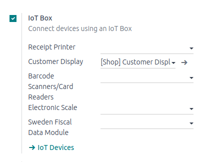

Use an IoT box with a PoS¶
Prerequisites¶
Before starting, make sure the following equipment is available:
An IoT box, with its power adapter.
A computer or tablet with an up-to-date web browser.
Odoo Online or an Odoo instance with the Point of Sale and IoT applications installed.
A local network set up with DHCP (this is the default setting).
An RJ45 Ethernet Cable (optional, but preferred over WiFi, which is already built in).
Any of the supported hardware (receipt printer, barcode scanner, cash drawer, payment terminal, scale, customer display, etc.). The list of supported hardware can be found on the POS Hardware page.
Setup¶
A suggested configuration for a point of sale system.¶
To connect hardware to the PoS, the first step is to connect an IoT box to the database. To do this, follow these instructions: Connect an Internet of Things (IoT) box to the Odoo database.
Then, connect the peripheral devices to the IoT box.
Device Name |
Instructions |
|---|---|
Printer |
Connect a supported receipt printer to a USB port or to the network, and power it on. Refer to Orders printing. |
Cash drawer |
The cash drawer should be connected to the printer with an RJ25 cable. |
Barcode scanner |
In order for the barcode scanner to be compatible it must end barcodes with an |
Scale |
Connect the scale and power it on. Refer to Connect a scale. |
Customer display |
Connect a screen to the IoT box to display the PoS order. Refer to Connect a screen. |
Payment terminal |
The connection process depends on the terminal. Refer to the payment terminals documentation. |
Once this is completed, connect the IoT box to the application. To do this, go to , tick the IoT Box option, and select the devices to be used in this PoS. Save the the changes.
Once set up is done, a new PoS session can be launched.